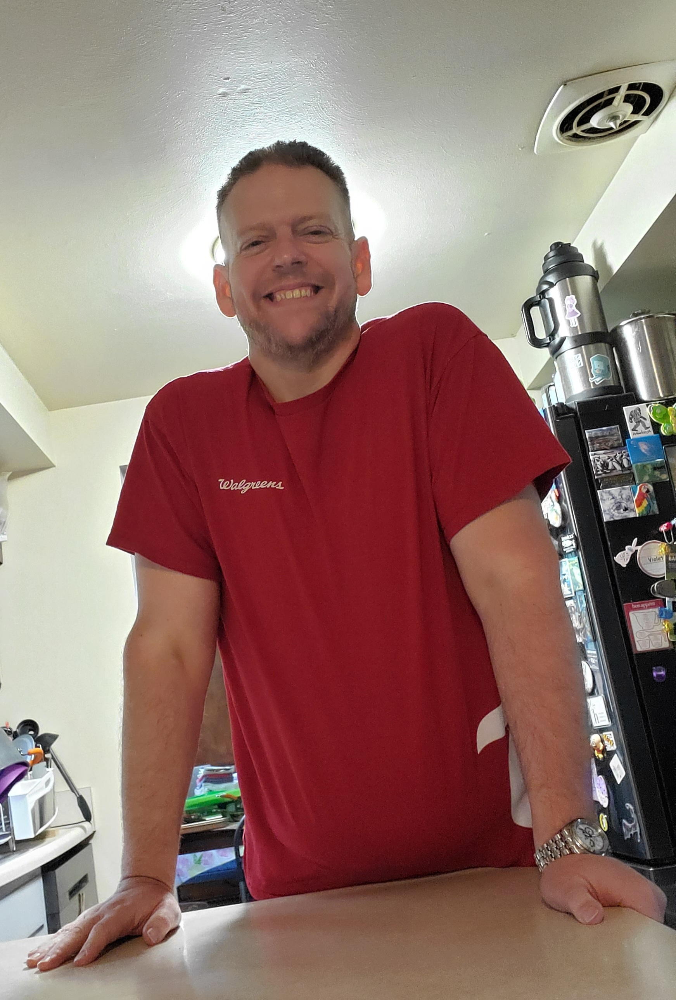

Work History
Walgreens
Customer Service Associate (CSA)
May 2019 to July 2019
- Models and delivers a distinctive and delightful customer experience.
- Registers sales on assigned cash register, provides customers with courteous, fair, friendly, and efficient checkout service.
Customer Experience
- Engages customers and patients by greeting them and offering assistance with products and services. Resolves customer issues and answers questions to ensure a positive customer experience.
- Models and shares customer service best practices with all team members to deliver a distinctive and delightful customer experience, including interpersonal habits (e.g., greeting, eye contact, courtesy, etc.) and Walgreens service traits (e.g., offering help proactively, identifying needs, servicing until satisfied, etc.).
Operations
- Provides customers with courteous, friendly, fast, and efficient service.
- Recommends items for sale to customer and recommends trade-up and/or companion items.
- Registers customer purchases on assigned cash register, collects cash and distributes change as requested; processes voids, returns, rain checks, refunds, and exchanges as needed.
- Keeps counters and shelves clean and well merchandised, takes inventory, and maintains records. Checks in and prices merchandise as required or as directed by store manager or communicated by the shift leader.
- Implements Company asset protection procedures to identify and minimize profit loss.
- Ensures compliance with state and local laws regarding regulated products (e.g., alcoholic beverages and tobacco products).
- Constructs and maintains displays, including promotional, seasonal, super structures, and sale merchandise. Completes resets and revisions as directed.
- Assists with separation of food items (e.g., raw foods from pre-cooked) and product placement as specified by policies/procedures (e.g., raw and frozen meats on bottom shelves). For consumable items, assists in stock rotation, using the first in, first out method and restock outs.
- Has working knowledge of store systems and store equipment.
- Provides customer service in the photo area, including digital passport photo service, poster print and creative machine, suggestive sell of promotional photo products.
- Assumes web pick-up responsibilities (monitors orders in Picture Care Plus, fills orders (pick items), delivers orders to customers as they arrive at store).
- Assists with exterior and interior maintenance by ensuring clean, neat, orderly store condition and appearance.
- Complies with all company policies and procedures; maintains respectful relationships with coworkers.
- Completes special assignments and other tasks as assigned.
Training & Personal Development
- Attends training and completes PPLs requested by Manager or assigned by corporate.